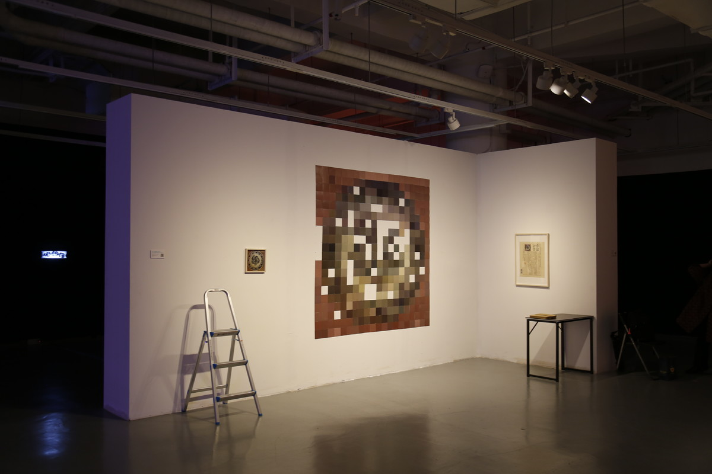
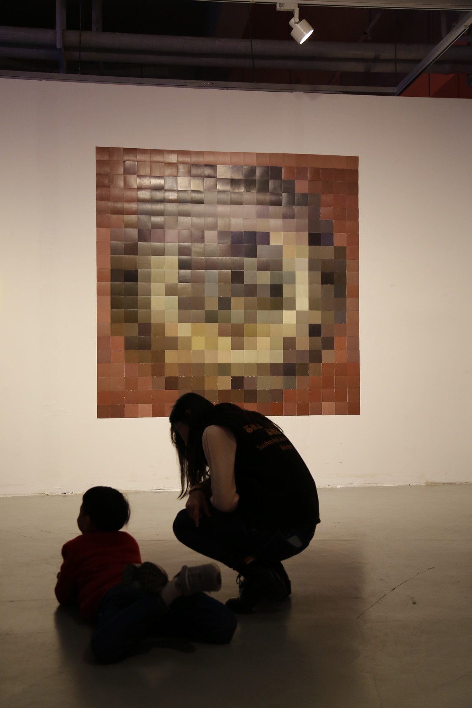
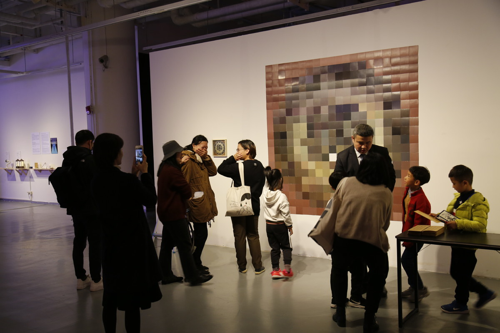
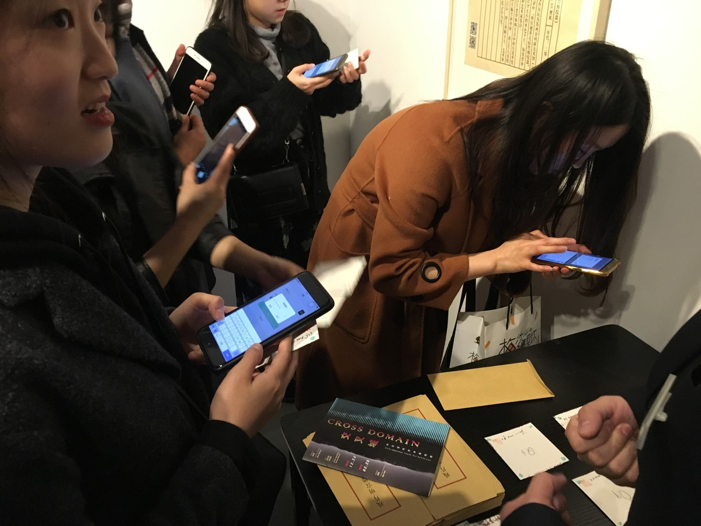

News & Contact
Projects
Cooperation projects
Texts
Biography
sHI Wanwan
Artist
News & Contact
Projects
Cooperation projects
Texts
Biography
残片：明宣德青花松竹梅纹盘

卡纸上丙烯10x10cmx400，铝制扶梯，宣纸上打印，录像为彩色单屏幕双声道可变尺寸，6分钟，2018
将一张“明宣德青花松竹梅纹盘”的图像分解成 10x10cm 的马赛克单色图像 400 张， 卡纸丙烯着色。在展览期间，观众可以以任意价格购买其中的每片颜色 (10x10cm),艺术家承诺 3 年以后以 2 倍的价格回购。
这张 200x200cm 的“青花瓷盘”将很长时间处在一个残缺状态，或许是永远。

金鸡湖美术馆，苏州

金鸡湖美术馆，苏州

金鸡湖美术馆，苏州